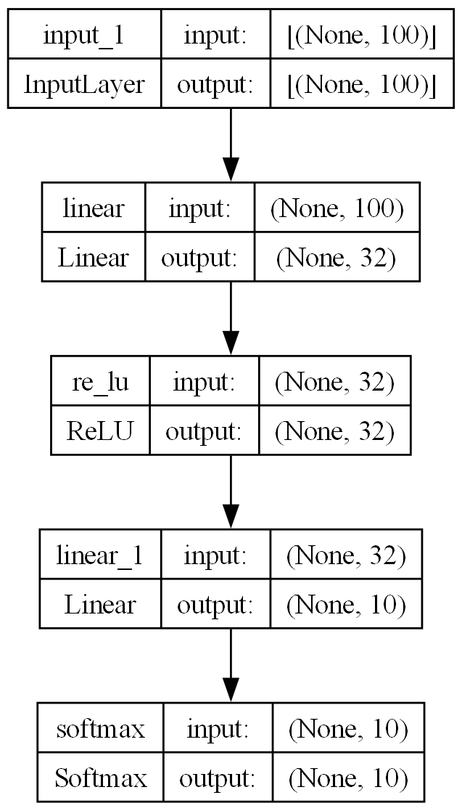
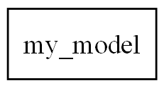
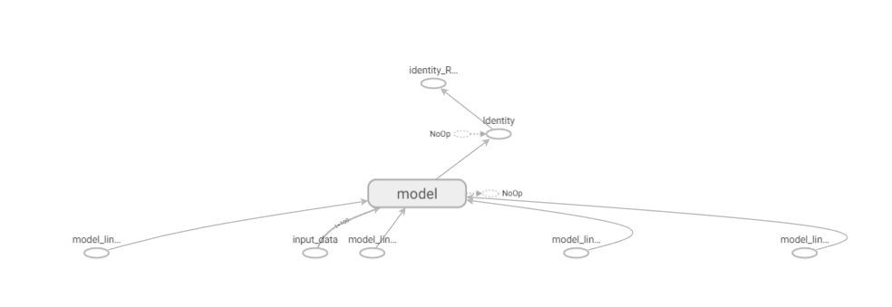
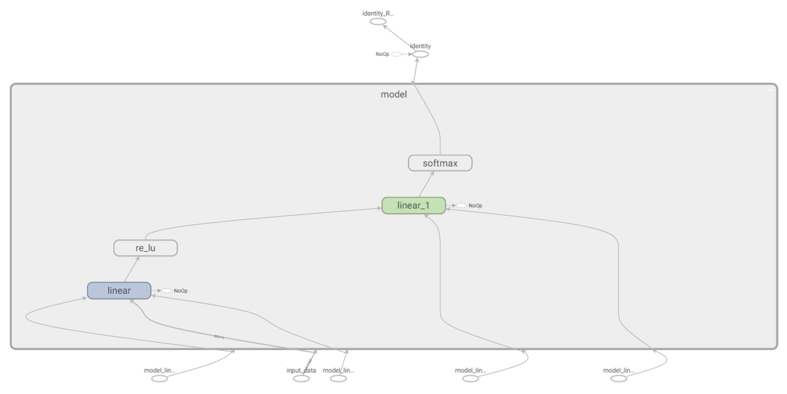
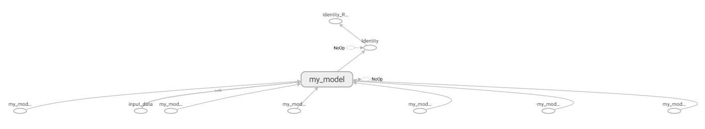
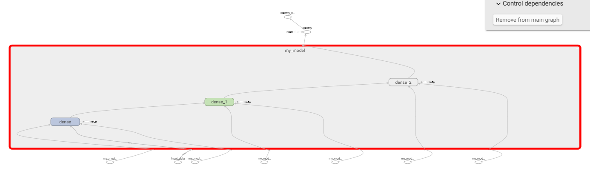
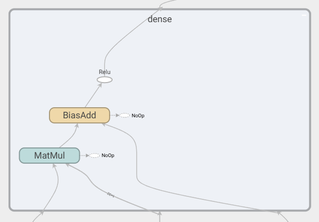

在 pytorch 中，我们一般通过继承 torch.nn.Module 类来构建模型，将子模块在构造函数 __init__ 中初始化，并在前向传播函数 forward 中，利用先前定义的子模块，定义网络的计算。
但是在 keras 中，事情并没有那么简单。诚然，一般的教程都会以简单的模型来开始；但是我们并不满足于简单的模型，所以会介绍到更复杂的 API。先说结论（太长不看）：
简单模块用 Sequential 足矣
稍复杂网络结构用 functional API 构建网络
若非必要，不建议 使用继承类的方式构建网络
注意：以下基于 keras 2.X API 探讨，部分内容可能过于老旧
起手式：Sequential 如果是能简单到能串糖葫芦的模型，那么直接用 Sequential 就行了，譬如下面的例子就是把三个线性层串在一起：
1 2 3 4 5 6 7 8 9 10 11 12 13 14 import kerasfrom keras import layersmodel = keras.Sequential( [ layers.Dense(2 , activation="relu" , name="layer1" ), layers.Dense(3 , activation="relu" , name="layer2" ), layers.Dense(4 , name="layer3" ), ] ) x = ops.ones((3 , 3 )) y = model(x)
更多参考 文档
对比 pytorch 其实也有对应的傻瓜式 模型构建 API
但是这样的模型构建只能应用在串糖葫芦这种 special case 上，可能作为简单教学和简单应用是没问题的，涉及到多路的网络结构就需要更加复杂的 API 来实现
复杂一点：functional API 涉及到多路网络架构的话，我们就需要显式地定义网络的计算图了。好在 keras 提供了比较方便的 functional API
1 2 3 4 5 6 7 8 9 10 11 12 import kerasfrom keras import layers, modelsinputs = keras.Input(shape=(784 ,)) x1 = layers.Dense(128 , activation="relu" )(inputs) x2 = layers.Dense(128 , activation="tanh" )(inputs) x = layers.Concatenate()([x1, x2]) x = layers.Dense(64 , activation="relu" )(x) x = layers.Dense(10 , activation=None )(x) y = layers.Softmax()(x) model = models.Model(inputs=inputs, outputs=y) model.summary()
此时就会构建一个分为两路构建线性层的模型：
1 2 3 4 5 6 7 8 9 10 11 12 13 14 15 16 17 18 19 20 21 22 23 24 Model: "model" __________________________________________________________________________________________________ Layer (type) Output Shape Param # Connected to ================================================================================================== input_1 (InputLayer) [(None, 784)] 0 [] dense (Dense) (None, 128) 100480 ['input_1[0][0]'] dense_1 (Dense) (None, 128) 100480 ['input_1[0][0]'] concatenate (Concatenate) (None, 256) 0 ['dense[0][0]', 'dense_1[0][0]'] dense_2 (Dense) (None, 64) 16448 ['concatenate[0][0]'] dense_3 (Dense) (None, 10) 650 ['dense_2[0][0]'] softmax (Softmax) (None, 10) 0 ['dense_3[0][0]'] ================================================================================================== Total params: 218,058 Trainable params: 218,058 Non-trainable params: 0 __________________________________________________________________________________________________
Functional API 的大概用法就是：
定义一个输入
将模块（keras.layers.Layer 的子类）实例化，并且将输入搞里头，得到输出
通过实例化 keras.models.Model，并定义输入和输出，得到模型
依据这个特性，我们可以很方便地构建 ResNet 的那种短路连接。而且，我们可以先把 block 构造成一个 Model，然后复用之：
1 2 3 4 5 6 7 8 9 10 11 12 13 14 15 16 17 18 19 import kerasfrom keras import layers, modelsdef get_multi_block (input_dim ): inputs = keras.Input(shape=(input_dim,)) x1 = layers.Dense(32 , activation="relu" )(inputs) x2 = layers.Dense(32 , activation="tanh" )(inputs) y = layers.Concatenate()([x1, x2]) model = models.Model(inputs=inputs, outputs=y) return model inputs = keras.Input(shape=(200 ,)) x = get_multi_block(200 )(inputs) x = get_multi_block(64 )(x) x = get_multi_block(64 )(x) x = layers.Dense(10 , activation=None )(x) y = layers.Softmax()(x) model = models.Model(inputs=inputs, outputs=y) model.summary()
模型大概长这样：
1 2 3 4 5 6 7 8 9 10 11 12 13 14 15 16 17 18 19 20 21 Model: "model_3" _________________________________________________________________ Layer (type) Output Shape Param # ================================================================= input_1 (InputLayer) [(None, 200)] 0 model (Functional) (None, 64) 12864 model_1 (Functional) (None, 64) 4160 model_2 (Functional) (None, 64) 4160 dense_6 (Dense) (None, 10) 650 softmax (Softmax) (None, 10) 0 ================================================================= Total params: 21,834 Trainable params: 21,834 Non-trainable params: 0 _________________________________________________________________
当然一旦层和模块套多了，用 model_1、model_2、dense_6 等 keras 自定义的取名方式可能会让模块含义难以理解，我们可以用模块构造时的 name 参数来区分，例如：
1 x = layers.Dense(10 , activation=None , name='my_logit_layer' )(x)
另外一个用处是在多模态里面，例如我们有一个 1D 的数据和 2D 的数据，我们需要将 1D 的数据和 2D 的数据分开处理：
1D 的数据用 LSTM 提取特征
2D 的数据用卷积提取特征
将分别提取出来的特征展平为一维向量，并拼接
之后用线性层输出一个分类概率 logit
用 keras 的 Functional API 来实现如下：
1 2 3 4 5 6 7 8 9 10 11 12 13 14 15 16 17 import kerasfrom keras import layers, modelsinput_1d = keras.Input(shape=(None , 64 )) x_1d = layers.LSTM(32 )(input_1d) x_1d = layers.Flatten()(x_1d) input_2d = keras.Input(shape=(28 , 28 , 1 )) x_2d = layers.Conv2D(32 , (3 , 3 ), activation='relu' )(input_2d) x_2d = layers.Conv2D(32 , (3 , 3 ), activation='relu' )(x_2d) x_2d = layers.Flatten()(x_2d) x = layers.Concatenate()([x_1d, x_2d]) y = layers.Dense(1 , activation='sigmoid' )(x) model = models.Model(inputs=[input_1d, input_2d], outputs=y) model.summary()
如果我们觉得用 list 来处理输入的话语义上可能不清晰，还可以把输入做成 dict 的形式，之后调用模型也得用约定的 dict 形式：
1 2 3 4 5 6 7 8 9 10 11 12 13 14 15 16 17 18 19 20 21 22 import kerasfrom keras import layers, modelsinput_1d = keras.Input(shape=(None , 64 ), name='text' ) x_1d = layers.LSTM(32 )(input_1d) x_1d = layers.Flatten()(x_1d) input_2d = keras.Input(shape=(28 , 28 , 1 ), name='image' ) x_2d = layers.Conv2D(32 , (3 , 3 ), activation='relu' )(input_2d) x_2d = layers.Conv2D(32 , (3 , 3 ), activation='relu' )(x_2d) x_2d = layers.Flatten()(x_2d) x = layers.Concatenate()([x_1d, x_2d]) y = layers.Dense(1 , activation='sigmoid' )(x) model = models.Model(inputs={ "text" : input_1d, "image" : input_2d }, outputs=y) model.summary()
继承类 因为哥们一开始也是从 pytorch 接触到炼丹的，一开始想要自定义模型的话，自然也会先去尝试 follow，谁知这里面还是挺坑的。说在前面：这个实现方法 非必要不建议用 ！
一开始想到把模型弄成一个类的方式可以维护很多和模型绑定的属性（例如某些数据的维度、某些需要调整是否可训练的模块等），所以就这样做了，但是嘛 emmmm，基本的能用是能用，但是进阶的功能就缺胳膊少腿了，尤其是继承 keras.models.Model。我们来拷打一下。
首先不同于 pytorch 模型和模块都继承自 torch.nn.Module 类，keras 将层归于 keras.layers.Layer 类，将模型归于 keras.models.Model 类，一个模型由若干层构成。
自定义层：继承 keras.layers.Layer 类 首先从 官方文档 开始，我们先从构建一个最简单的线性层开始玩起：
1 2 3 4 5 6 7 8 9 10 11 12 class Linear (keras.layers.Layer): def __init__ (self, units=32 , input_dim=32 ): super ().__init__() self.w = self.add_weight( shape=(input_dim, units), initializer="random_normal" , trainable=True , ) self.b = self.add_weight(shape=(units,), initializer="zeros" , trainable=True ) def call (self, inputs ): return tf.matmul(inputs, self.w) + self.b
并且用我们所构造的线性层来构建模型：
1 2 3 4 5 6 7 8 9 10 11 12 13 14 15 16 17 18 19 20 21 22 23 24 25 import tensorflow as tfimport kerasfrom keras import layers, modelsclass Linear (layers.Layer): def __init__ (self, units=32 , input_dim=32 ): super ().__init__() self.w = self.add_weight( shape=(input_dim, units), initializer="random_normal" , trainable=True , ) self.b = self.add_weight(shape=(units,), initializer="zeros" , trainable=True ) def call (self, inputs ): return tf.matmul(inputs, self.w) + self.b inputs = keras.Input(shape=(100 ,)) x = Linear(32 , 100 )(inputs) x = layers.ReLU()(x) x = Linear(10 , 32 )(x) y = layers.Softmax()(x) model = models.Model(inputs=inputs, outputs=y) model.summary()
如果想实现更多的规范，建议参考 keras 官方的 keras.layers.Dense 实现 ，里面包含很多的 corner case，以及更完备的设置
基本的元素：
构造函数：接受参数，初始化权重
前向传播：__call__ 方法在基类 keras.layers.Layer 中被重写，包含是否为 eager execution、判断输入是否兼容等。我们只需实现在 call 方法里面实现层的前向传播运算即可。
当然这样实现很简单，不会出什么问题；更复杂的模型就会带来问题：
keras.layers.Dense 仅接受输出的特征维度就能完成模块构建，如何做到？如何实现那种在训练阶段和测试阶段行为不同的模块，譬如 batch normalization, dropout？
首先来看第一个问题。
看到 keras.layers.Dense 类的 官方实现 ，会发现权重的初始化被弄到了 build 方法里面：
__init__ 构造函数里面只有初始化 initializer 的操作build 方法接受 input_shape，结合构造函数里面输入的输出特征维度，确定各参数的形状，以及对权重初始化等在 build 方法的最后，还需要设置一个 self.built=True
还实现了一个 compute_output_shape 的方法，用于输出模型输出的形状
最后还有一个 get_config 方法，用于将模型的设置序列化
对于层的序列化和反序列化，参考 官方文档 中关于 get_config 和 build_from_config 部分
主要是 build 方法的实现，让层在被使用 functional API 等方式构建的时候有了形状推理的功能。
然后是第二个问题。
Pytorch 用 model.train() 和 model.eval() 来控制模型是否在训练还是在测试，但是 keras 模型是通过在 __call__ 方法中输入 training 参数来设定的，譬如
1 2 y_pred = model(X, training=False ) y_pred = model(X, training=True )
所以，在前向传播，也就是 call 方法中，我们也要加入 training 参数在不同取值下的逻辑，参考一下 keras.layer.Dropout 的 官方实现 ：
根据 training 的取值来，具体利用 control_flow_util.smart_cond 来实现条件返回
如果 training=True，则返回应用 dropout 之后的结果
如果 training=False，则返回输入
这里就是坑的一点，也是这里要指出的一个事实：加入 training 参数的 call 方法可能导致 内存泄漏 ！
以下是一个 NoisyNet 的实现：
1 2 3 4 5 6 7 8 9 10 11 12 13 14 15 16 17 18 19 20 21 22 23 24 25 26 27 28 29 30 31 32 33 34 35 36 37 38 39 40 41 42 43 44 45 46 47 48 49 50 51 52 53 54 55 56 57 58 59 60 61 62 63 64 65 66 67 68 69 70 71 72 73 74 75 76 import tensorflow as tfimport kerasfrom keras import layers, modelsfrom keras import backend as Kimport mathclass NoisyLinear (layers.Layer): def __init__ (self, out_features, sigma_init=0.5 , **kwargs ): self.out_features = out_features self.sigma_init = sigma_init super (NoisyLinear, self).__init__(**kwargs) def build (self, input_shape ): in_features = input_shape[-1 ] mu_range = 1 / math.sqrt(in_features) self.weight_mu = self.add_weight(name='weight_mu' , shape=(self.out_features, in_features), initializer=tf.random_uniform_initializer( minval=-mu_range, maxval=mu_range), trainable=True ) self.bias_mu = self.add_weight(name='bias_mu' , shape=(self.out_features,), initializer=tf.random_uniform_initializer( minval=-mu_range, maxval=mu_range), trainable=True ) self.weight_sigma = self.add_weight(name='weight_sigma' , shape=(self.out_features, in_features), initializer=tf.constant_initializer( self.sigma_init / math.sqrt(in_features)), trainable=True ) self.bias_sigma = self.add_weight(name='bias_sigma' , shape=(self.out_features,), initializer=tf.constant_initializer( self.sigma_init / math.sqrt(self.out_features)), trainable=True ) super (NoisyLinear, self).build(input_shape) def call (self, x, training=False ): if training: weight_epsilon = self._scale_noise( (self.out_features, x.shape[-1 ])) bias_epsilon = self._scale_noise((self.out_features, )) weight = self.weight_mu + self.weight_sigma * weight_epsilon bias = self.bias_mu + self.bias_sigma * bias_epsilon else : weight = self.weight_mu bias = self.bias_mu output = K.dot(x, K.transpose(weight)) + bias return output def _scale_noise (self, shape ): epsilon = K.random_normal(shape=shape) epsilon = K.sign(epsilon) * K.sqrt(K.abs (epsilon)) return epsilon def compute_output_shape (self, input_shape ): return input_shape[0 ], self.out_features inputs = keras.Input(shape=(100 ,)) x = layers.Dense(32 )(inputs) x = layers.ReLU()(x) x = NoisyLinear(10 )(x) y = layers.Softmax()(x) model = models.Model(inputs=inputs, outputs=y) model.summary()
乍一看没问题，那么我们添加一个训练的逻辑，以及一个用于监视内存用量的函数：
1 2 3 4 5 6 7 8 9 10 11 12 13 14 15 16 17 18 19 20 21 22 23 24 25 26 27 28 29 30 31 32 33 34 35 36 37 38 import numpy as npimport psutilimport osX = np.random.rand(20000 , 100 ).astype(np.float32) y = tf.keras.utils.to_categorical(np.random.randint(10 , size=(20000 ,)), num_classes=10 ).astype(np.float32) loss_fn = tf.keras.losses.CategoricalCrossentropy() optimizer = tf.keras.optimizers.Adam() class MemoryMonitor (tf.keras.callbacks.Callback): def on_epoch_begin (self, epoch, logs=None ): process = psutil.Process(os.getpid()) print (f"Epoch {epoch} start - Memory usage: {process.memory_info().rss / 1024 ** 2 :.2 f} MB" ) def on_epoch_end (self, epoch, logs=None ): process = psutil.Process(os.getpid()) print (f"Epoch {epoch} end - Memory usage: {process.memory_info().rss / 1024 ** 2 :.2 f} MB" ) batch_size = 100 dataset = tf.data.Dataset.from_tensor_slices((X, y)).batch(batch_size) epochs = 200 memory_monitor = MemoryMonitor() for epoch in range (epochs): memory_monitor.on_epoch_begin(epoch) for step, (x_batch, y_batch) in enumerate (dataset): with tf.GradientTape() as tape: predictions = model(x_batch, training=True ) loss = loss_fn(y_batch, predictions) gradients = tape.gradient(loss, model.trainable_variables) optimizer.apply_gradients(zip (gradients, model.trainable_variables)) memory_monitor.on_epoch_end(epoch)
然后得到内存用量的输出：
1 2 3 4 5 6 7 8 9 10 11 12 13 14 15 16 17 18 19 Epoch 0 start - Memory usage: 1231.91 MB Epoch 0 end - Memory usage: 2318.18 MB Epoch 1 start - Memory usage: 2318.18 MB Epoch 1 end - Memory usage: 2350.60 MB Epoch 2 start - Memory usage: 2350.60 MB Epoch 2 end - Memory usage: 2382.94 MB Epoch 3 start - Memory usage: 2382.94 MB Epoch 3 end - Memory usage: 2415.52 MB Epoch 4 start - Memory usage: 2415.52 MB Epoch 4 end - Memory usage: 2448.46 MB Epoch 5 start - Memory usage: 2448.46 MB Epoch 5 end - Memory usage: 2479.93 MB ... Epoch 48 start - Memory usage: 3759.94 MB Epoch 48 end - Memory usage: 3792.23 MB Epoch 49 start - Memory usage: 3792.23 MB Epoch 49 end - Memory usage: 3823.97 MB Epoch 50 start - Memory usage: 3823.97 MB Epoch 50 end - Memory usage: 3870.03 MB
可以看到每个 epoch 之后是有不少的增加的，这只是模拟数据，现实数据肯定只会更多，而且训练的 epoch 数都会非常多，挂着稍微久一点，显存就直接笋干爆炸了。
那么针对这个问题，俺也是查了非常久，最后总结就是
所有涉及新张量运算的函数应当用 @tf.function 修饰器来修饰！！！
针对这个例子，我们将 NoisyLinear 类的 _scale_noise 方法加上 @tf.function 修饰器：
1 2 3 4 5 6 class NoisyLinear (layers.Layer): @tf.function def _scale_noise (self, shape ): epsilon = K.random_normal(shape=shape) epsilon = K.sign(epsilon) * K.sqrt(K.abs (epsilon)) return epsilon
此时的内存用量就会变成：
1 2 3 4 5 6 7 8 9 10 11 12 13 14 15 16 17 18 19 Epoch 0 start - Memory usage: 1260.84 MB Epoch 0 end - Memory usage: 2314.94 MB Epoch 1 start - Memory usage: 2314.94 MB Epoch 1 end - Memory usage: 2316.06 MB Epoch 2 start - Memory usage: 2316.06 MB Epoch 2 end - Memory usage: 2316.62 MB Epoch 3 start - Memory usage: 2316.62 MB Epoch 3 end - Memory usage: 2317.14 MB Epoch 4 start - Memory usage: 2317.14 MB Epoch 4 end - Memory usage: 2315.14 MB Epoch 5 start - Memory usage: 2315.14 MB Epoch 5 end - Memory usage: 2309.54 MB ... Epoch 48 start - Memory usage: 2214.17 MB Epoch 48 end - Memory usage: 2214.18 MB Epoch 49 start - Memory usage: 2214.18 MB Epoch 49 end - Memory usage: 2214.28 MB Epoch 50 start - Memory usage: 2214.28 MB Epoch 50 end - Memory usage: 2214.66 MB
这样就彳亍了，就不会有内存泄漏的问题
自定义模型：继承 keras.models.Model 类 一个层可能就是单个或多个输入、单个输出的结构，但是模型的输入和输出都可以是多个的
多个输入、单个输出的层：如 keras.layers.Concatenate 层
至于这句话对不对，暂且认为是这样吧，可能层也有多个输出的反例
总之，如果我们想仿照 pytorch 继承 nn.Module 的方法，来继承这个 Model 类的话，也不是不行。继承 Model 类让我们能够给模型增加新的属性和方法，能够更好地定制化模型。
事实上，官方也提供了关于这个方法的 文档 ，我们来拷打一下
首先仿照它文档里面的代码来构建一个最简单的模型：
1 2 3 4 5 6 7 8 9 10 11 12 13 14 15 16 17 18 19 import kerasfrom keras import layersclass MyModel (keras.Model): def __init__ (self, num_classes=10 ): super ().__init__() self.block_1 = layers.Dense(128 , activation='relu' ) self.block_2 = layers.Dense(64 , activation='relu' ) self.classifier = layers.Dense(num_classes, activation=None ) def call (self, inputs ): x = self.block_1(inputs) x = self.block_2(x) return self.classifier(x) model = MyModel() model.summary()
然后得到一个喜闻乐见的错误：
1 ValueError: This model has not yet been built. Build the model first by calling `build()` or by calling the model on a batch of data.
因为根据已知的信息，并不知道输入的 shape 该长啥样。所以我们就试试 calling the model on a batch of data
1 2 3 4 5 import numpy as npmodel = MyModel() dummy_X = np.random.randn(1 , 32 ) model(dummy_X) model.summary()
此时显示：
1 2 3 4 5 6 7 8 9 10 11 12 13 14 15 Model: "my_model" _________________________________________________________________ Layer (type) Output Shape Param # ================================================================= dense (Dense) multiple 4224 dense_1 (Dense) multiple 8256 dense_2 (Dense) multiple 650 ================================================================= Total params: 13,130 Trainable params: 13,130 Non-trainable params: 0 _________________________________________________________________
会发现有一点：Output Shape 这一列全是展示的 multiple，而非准确的形状。
再试另一个方法：model.build()
1 2 3 4 import numpy as npmodel = MyModel() model.build(input_shape=(None , 32 )) model.summary()
但是 model.summary() 输出的结果还是同上。最后找了一圈，发现要 自己实现一下 build 方法，真他妈坑爹！
1 2 3 4 5 6 7 8 9 10 11 12 13 14 15 16 17 18 19 20 21 import kerasfrom keras import layersimport tensorflow as tfclass MyModel (keras.Model): def __init__ (self, num_classes=10 ): super ().__init__() self.block_1 = layers.Dense(128 , activation='relu' ) self.block_2 = layers.Dense(64 , activation='relu' ) self.classifier = layers.Dense(num_classes, activation=None ) def build (self, input_shape ): super ().build(input_shape) x = tf.keras.Input(shape=input_shape[1 :]) self.call(x) def call (self, inputs ): x = self.block_1(inputs) x = self.block_2(x) return self.classifier(x)
然后这样就彳亍了：
1 2 3 4 5 6 7 8 9 10 11 12 13 14 15 Model: "my_model" _________________________________________________________________ Layer (type ) Output Shape Param ================================================================= dense (Dense) (None , 128 ) 4224 dense_1 (Dense) (None , 64 ) 8256 dense_2 (Dense) (None , 10 ) 650 ================================================================= Total params: 13 ,130 Trainable params: 13 ,130 Non-trainable params: 0 _________________________________________________________________
网络结构的可视化 keras 自带的画图 API 首先，我们可以通过 keras 自带的方法导出 PNG 格式的模型结构图，用法详见 文档 ：
1 2 3 4 5 6 tf.keras.utils.plot_model(model, to_file='model_structure.png' , show_shapes=True , show_layer_names=True , expand_nested=True , show_layer_activations=True )
在使用之前还得装点包：
1 2 pip install pydot graphviz sudo apt install graphviz
对于上面的自定义 Linear 层，以及用 functional API 构建的模型能画出这样的图：

但是对于继承 keras.models.Model 类的模型，情况就变得幽默了起来：

tensorboard 此外，我们也可以在 tensorboard 中可视化模型：
1 2 3 4 5 6 7 8 9 10 11 12 13 14 15 log_dir = './tensorboard' summary_writer = tf.summary.create_file_writer(log_dir) tf.summary.trace_on() dummy_input = tf.zeros((1 , 100 )) @tf.function def forward_pass (input_data ): return model(input_data, training=True ) _ = forward_pass(dummy_input) with summary_writer.as_default(): tf.summary.trace_export(name="model_structure" , step=0 )
注意：上面的前向传播 必须 要用带有 @tf.function 装饰器的函数封一层，否则 tensorboard 就不能记录上网络结构
自定义全连接层的网络结构如下所示

双击 model 点开之：

虽然看上去歪歪扭扭，但是也算是能看了。
同样地，对于继承 keras.models.Model 类的模型，似乎也能通过 tensorboard 进行可视化：

双击 model 点开之：

再双击 dense 点开之：

可以看到我们在构建模型时所选用的 ReLU 激活函数
总结 如果不是有特别需要（例如合作、接前人维护的屎山）的话，尽量别碰 tensorflow，因为这会让你的生活变得不幸 。
如果需要自定义模型的话，也会比较推荐用 fuctional API 去构建。如果实在是有定制化模型的需要（如定制模型的不同前向传播路径、绑定特定参数为属性、绑定特定函数为方法等 OOP 操作实现），建议自定义一个类，类中包含一个由 functional API 构建的模型（作为属性），在这个自定义类中维护其他的属性及方法。
顺带一提：keras 现在都走到 3.X 版本了，后端也支持 pytorch 了（虽然某些 API 可能调整了）。如果是单纯想尝试 keras 的话，这边也建议 keras 3.X + pytorch 起手了（